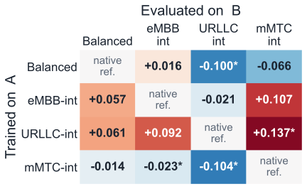
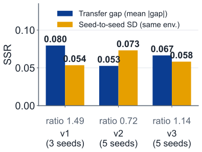
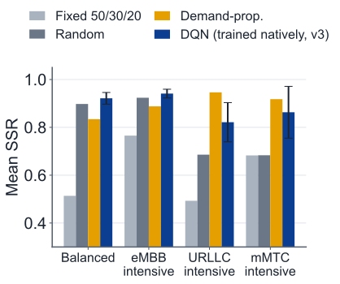

1The problem
Every millisecond, a 5G base station must share its limited radio capacity between three channels, each carrying a different type of task from its connected devices:
eMBBvideo and downloads
URLLCrobots and cars
mMTCsensor readings
An AI scheduler learns this split by trial and error, but real traffic keeps changing.
What if the traffic mix changes after training?
2Simulator & four environments
| Environment | Load share |
|---|---|
| Balanced | 333333 |
| eMBB-int | 502525 |
| URLLC-int | 255025 |
| mMTC-int | 252550 |
Same total load (96 %) everywhere: only the mix differs.
3How we measure the loss
Gap = SSR(native) − SSR(transferred). SSR = share of SLA targets met.
4Reward & agent
R = Σ SSR − 0.1·backlog
Rewarding SLA satisfaction directly matches the evaluation metric and avoids trading SLAs for efficiency.
AgentDeep Q-NetworkSeeds5 per environmentTraining600 episodes
5Results

Gap by train (row) and test (column) environment
Up to 0.14 SSR lost, yet many gaps are negative

Transfer gap vs retraining with another seed
The gap is about as large as training noise

Mean SSR per environment
RL beats a fixed split, not always simple heuristics
6Conclusions
- Wrong traffic mix costs 5–8 SSR points, similar to seed noise.
- Balanced training transfers best.
- Distribution distance does not predict the gap.
Limits: single cell, DQN only. Next: PPO, mobility, more seeds.
Contributions
Mark Zhao
Built the simulator and RL agent; chose the parameters and assumptions
Stanley Findsen
Led the literature review and linked our work to current industry practice